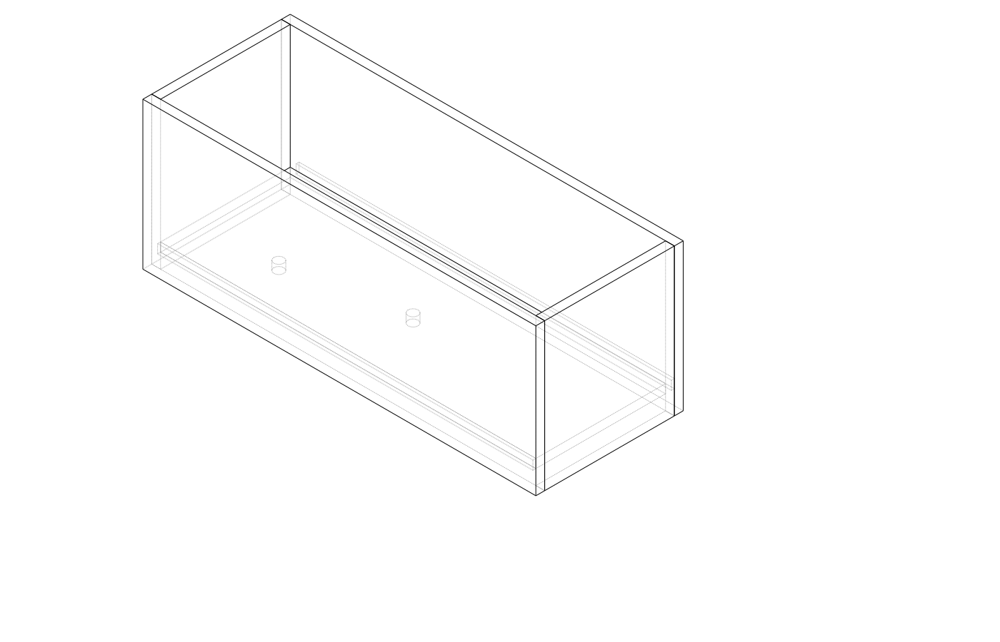
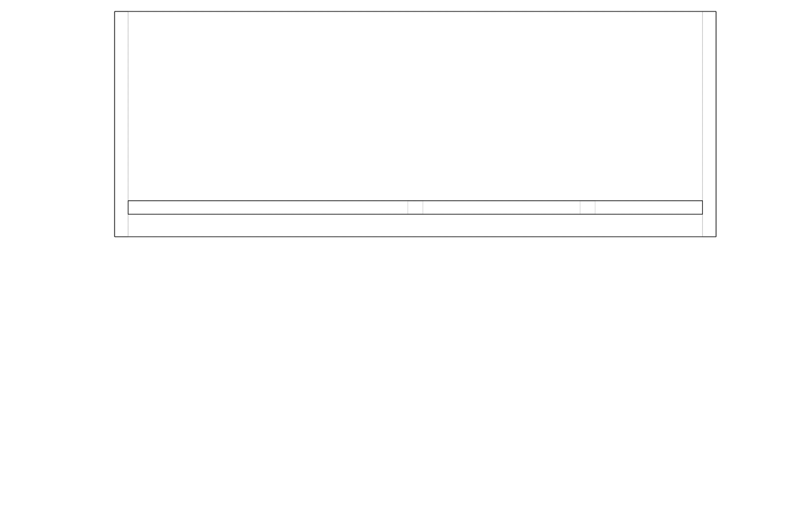
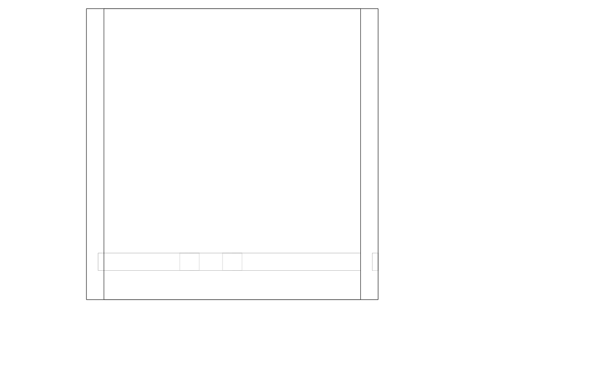
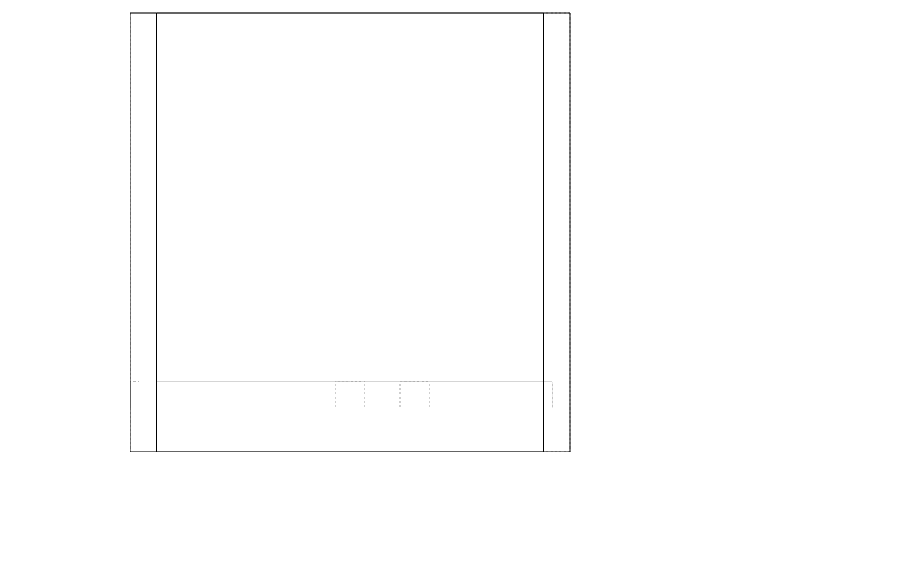
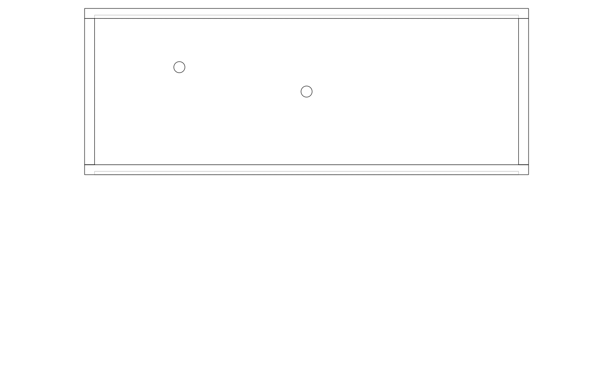

| Item | Qty | Unit | Unit price | Subtotal |
|---|---|---|---|---|
| Cedar DAR 90x19mm (side boards) | 4 | length | $18.50 | $74.00 |
| Cedar DAR 90x19mm (end boards) | 2 | length | $12.00 | $24.00 |
| Cedar DAR 90x19mm (base boards) | 3 | length | $12.00 | $36.00 |
| Outdoor timber oil (250 mL) | 1 | tin | $18.00 | $18.00 |
| Stainless screws 40mm (box) | 1 | box | $8.50 | $8.50 |
| PVA exterior glue (250 mL) | 1 | bottle | $7.00 | $7.00 |
| Total | $167.50 | |||
| Part | Qty | L (mm) | W (mm) | T (mm) | Notes |
|---|---|---|---|---|---|
| Side wall | 2 | 800 | 300 | 19 | Long faces, dado on inside |
| End wall | 2 | 262 | 300 | 19 | Sits between side walls |
| Base panel | 1 | 762 | 262 | 19 | Drops into dado |
Side wall inner length 762 = 800 − 2 × 19. Base panel sized to slide into dado with ~1 mm clearance.
Mill / cut to size — Cross-cut all boards to length. Rip side walls to 300 mm height if starting from wider stock.
Mark dado on side walls — On the inside face of each side wall, mark two lines 30 mm and 49 mm (30 + 19) up from the bottom edge. These are the top and bottom shoulders of the 19 mm-wide, 6 mm-deep dado groove.
Cut dado shoulders — With a tenon saw guided by a square, saw down 6 mm on each shoulder line. Keep the saw vertical; the saw kerfs define the width exactly.
Waste out the dado — Chisel between the two kerfs in stages: score across the grain first, then pare the waste from each end toward the middle. Flatten the floor with a router plane or sharp chisel registered flat. Test-fit the base panel — it should slide in snugly with light hand pressure.
Mark and cut corner rabbets on end walls — On each end of both end walls, mark a rabbet 19 mm wide × 10 mm deep (half thickness). Cut shoulder with tenon saw, remove waste with chisel. The end walls will nest behind the side walls at each corner.
Drill drainage holes — Drill 8 × 20 mm holes in the base panel before assembly (4 columns × 2 rows, evenly spaced). Chamfer the top rim of each hole to prevent splitting.
Dry fit — Assemble without glue. Check that base drops fully into both dados with the end walls in place. Adjust with a shoulder plane or chisel if tight.
Glue and screw — Apply exterior PVA to all mating faces. Clamp end walls to side walls; drive 2 × 40 mm stainless screws through each rabbet corner. Set base into dados (glue optional — loose allows for movement and easier disassembly).
Clean up — Flush any protruding edges with a block plane. Remove squeeze-out with a damp cloth before it sets.
Finishing — Sand to 120 grit. Seal all end grain generously with timber oil before the first outdoor exposure. Apply oil to all faces; allow to soak in and wipe excess after 20 min.